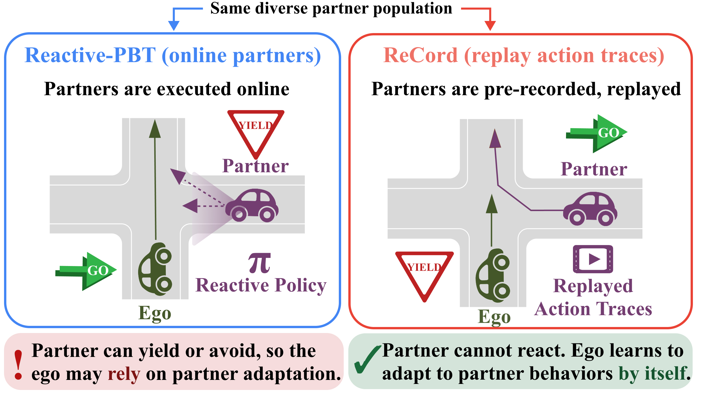
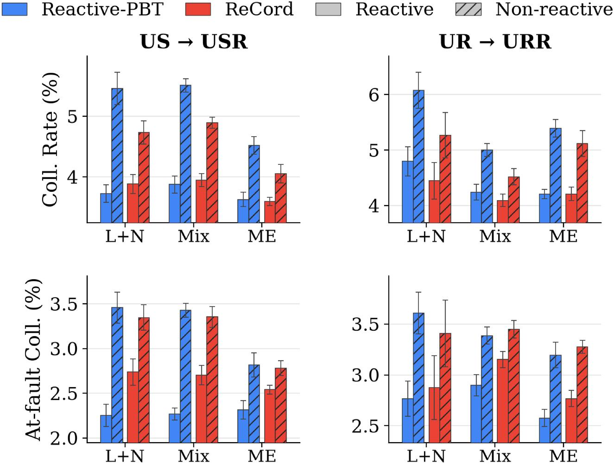
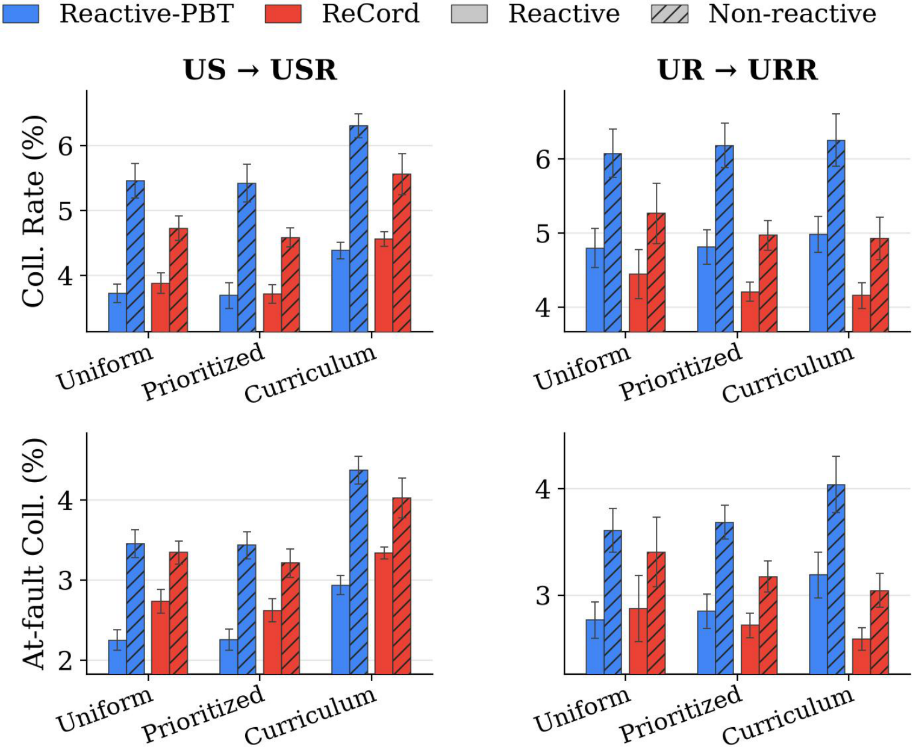
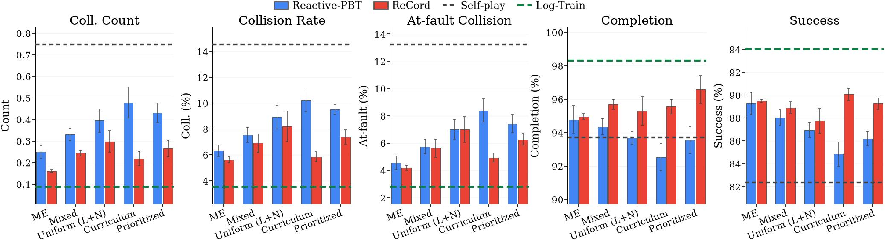
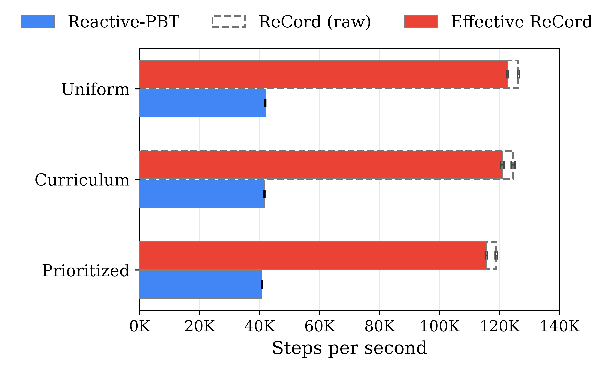

Reactive-PBT
Partner policy runs online
Partners observe the situation and can yield, brake, or avoid the ego in response.
In Submission · 2026
Reactivity reliance is the dependence on other agents yielding instead of the ego adapting.
Truthful coordination emerges from the ego's adaptation, not other agents yielding.
Same scene, Same partner. Only reactivity changes. But the results are different!
When the partner reacts, it gets out of the way on its own.
When that partner is replayed, it will not move, so the ego has to yield.
01
A conflict can often be resolved if either the ego or the partner yields. Reactive-PBT exposes the ego to diverse partners, but those partners still act online. If they repeatedly yield first, the ego may learn to depend on that response instead of learning when to yield itself.
Unseen other vehicles may react unexpectedly. Therefore, evaluation on not only whether the ego succeeds with an adaptive partner is needed, but what happens when the same kind of partner no longer adapts to the ego.
02
ReCord keeps the diversity of population-based training but changes how the partners are executed. Before ego training, it collects action traces from a population of pre-trained policies. During training, action traces are replayed instead of running their policies online. Thus, partner's actions can no longer change in response to the ego's current behavior, so the ego must learn to handle conflicts without depending on favorable partner adaptation.

Reactive-PBT
Partner policy runs online
Partners observe the situation and can yield, brake, or avoid the ego in response.
ReCord
Partner action trace replayed
Partners follow actions recorded in advance. The ego's current behavior does not change their next action.
03
Robustness across diverse population and sampling
ReCord is robust with diverse partner populations. L+N and Mix are predefined reward-based populations. ME is an unsupervised maximum-entropy population.
ReCord is robust with diverse sampling methods. Uniform draws partners evenly. Curriculum and prioritized sampling are the structured alternatives.
Zero-shot partners
The same unseen partners are evaluated in two ways, reactive and non-reactive. A reactive partner chooses its actions online as the scene changes. A non-reactive partner follows an action trace recorded in advance.
Unseen seeds. Partners use the same reward function as the training population but are trained with unseen random seeds. US evaluates them reactively, while USR uses their pre-recorded trajectories.
Unseen rewards. Partners are trained with reward functions unseen during ego training, creating behavioral mismatch. UR evaluates them reactively, while URR uses pre-recorded trajectories.
Human log-replay. Partners follow recorded human trajectories, providing a natural non-reactive evaluation.
reactivity reliance gap is measured by the change in collision metrics (at-fault collision, collision rate) between the non-reactive and reactive evaluations (USR − US, or URR − UR). A smaller gap indicates less performance degradation when partner reactivity is removed, but it must be considered alongside collision and task-success performance in both modes.
| Metric | What it records |
|---|---|
| Collision count | Collisions per agent. |
| Collision rate | Episodes with a collision, as a percentage. |
| At-fault collision | Collisions attributed to the ego, as a percentage. |
| Completion | Episodes in which the ego reaches the goal. |
| Success | Episodes in which the ego reaches the goal without a collision. |
04
ReCord reduces the reactivity reliance gap across collision metrics while remaining competitive with Reactive-PBT under reactive evaluation with unseen partners. The reduction corresponds to fewer collisions under non-reactive evaluation, including human log-replay, while task completion is largely preserved.
With the L+N population under uniform sampling, the reactivity reliance gap shrinks for both unseen seeds and unseen rewards. The values below are collision count.
Unseen-seed reactivity reliance gap
Collision count
0.123 → 0.045
USR − US, Reactive-PBT → ReCord. Replayed collisions fall from 0.213 to 0.147 per agent.
Unseen-reward reactivity reliance gap
Collision count
0.126 → 0.053
URR − UR, Reactive-PBT → ReCord. Replayed collisions fall from 0.245 to 0.170 per agent.
Human log-replay collisions
Collision count
0.451 → 0.293
Reactive-PBT → ReCord with prioritized sampling: 35.0% fewer collisions count.
Under reactive unseen-seed evaluation with uniform sampling, Reactive-PBT has slightly fewer collisions (0.090 vs. 0.102 per agent) and a slightly higher success rate (97.5% vs. 97.0%). Reactive evaluation is broadly comparable. The smaller gap should be read together with collision performance in both modes, rather than as a standalone improvement.


ReCord reduces collision count, collision rate, and at-fault collision relative to Reactive-PBT, while generally maintaining or improving completion and success. On log-replay, structured sampling further reduces ReCord's collision count. The same reduction is not observed consistently for Reactive-PBT.

05
Raw training throughput is measured over 100 million steps on one RTX 3090, for four seeds, under uniform, prioritized, and curriculum sampling.
126K vs 42K
Raw SPS · uniform sampling · single RTX 3090
ReCord reaches about 3× higher raw SPS across these strategies. Amortizing the one-time replay preparation over the 2 × 109-step budget leaves about 123K effective SPS under uniform sampling, 2.9× Reactive-PBT, with less than 3% overhead.

06
The updated ReCord manuscript is currently available as a submission draft; a public citation will be added when released. An earlier version, ReCord: Replay Coordination for Safe and Robust Population-Based Training in Autonomous Driving, appeared at the Trustworthy AI for Good workshop at ICML 2026. Read the workshop version.
Fields stay empty until the citation is public.
@inproceedings{,
title = {},
author = {},
booktitle = {},
year = {}
}